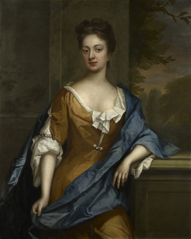
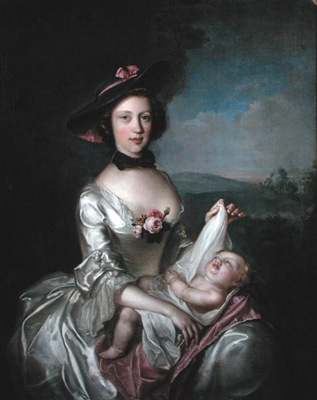
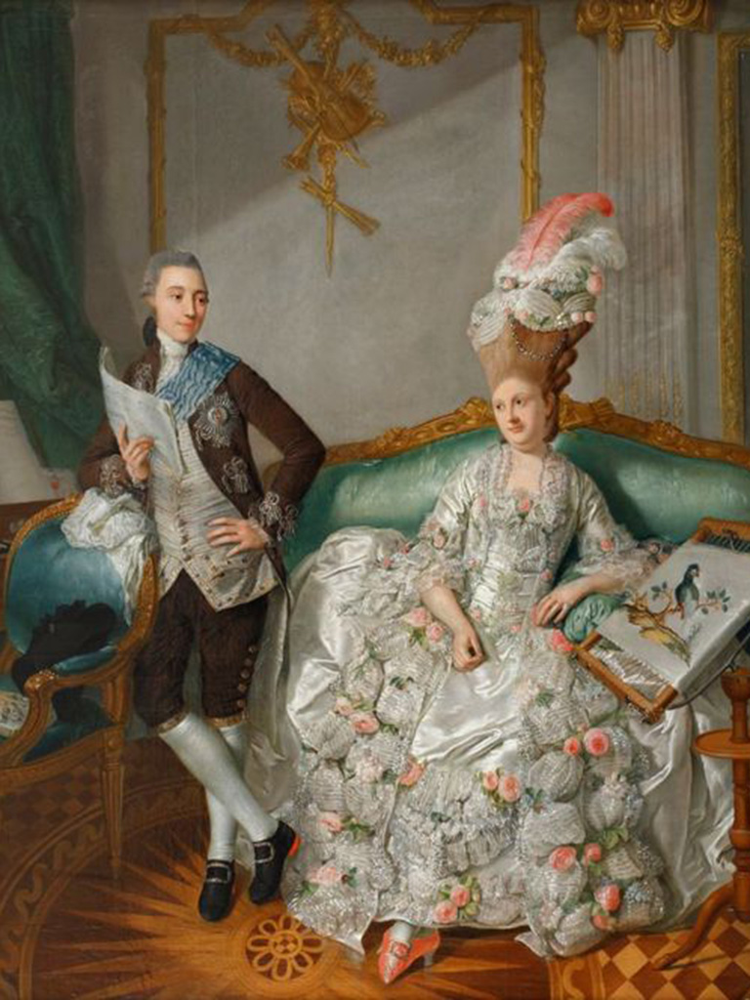

The eighteenth century saw both the American revolutionary war, and the French revolution. Seven year's war, and the French Indian war.
For the rich this century meant wide hoop skirts, and I mean wide.
Caps as a fashionable headdress.Later in the century the waistline moved upwards, towards what we now call an empire waist line.
This is also where we see a strong decline in the usage of hoop skirts. Clothes were divided in day dress, formal dress, and underdress.
1700-1750

Here we see the late baroque or rococco style. These few decades usually have these words attached to them: soft pastels, light, airy, and asymmetrical designs, and playful styles.
There was a difference between "full dress"which was mostly worn on formal occasions, and "undress" wich was worn inside the home. As time went on, the need for such differnces slowly dwindled and dissappeared.
Wigs were an important asset to both men an women of status.
1750-1775

Here women's clothes were focused on an upside down cone shape for the upper body.
The court dress made sure that women had no sign of comfort. Big hoop skirts (panniers) prevented women from sitting down.
Stays were very stiff, to make sure that women had correct posture. Outside of the court dress, regular dress became a lot less extravagant due to the enlightenment movement that was going on.
1775-1795
 The age of Marie Antoinette. Again panniers, and now corsets were fashionable. But Marie Antoinette brought change, to escape the whirlwind that is court life, she and her friend enjoyed dressing up as peasants, straw hats and all. The 'ladies of the court' could now be confused with simple peasant women, due to the new "chemise a la reine" During the revolution dresses became a way to show how patriotic you are. By 1790 skirts were still full, but not in a specific direction. The waistlines raised a bit, preparing for the empire waist in the beginning of the next century.